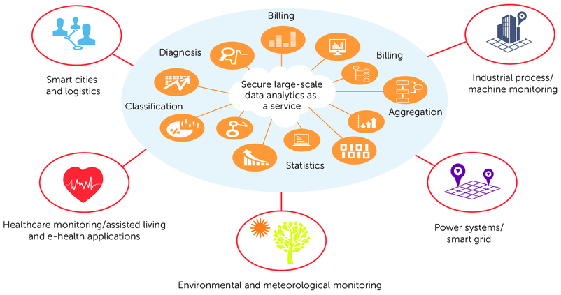

Shaping the Future of Cloud Computing
Introduction
Cloud computing has revolutionized the way businesses operate and individuals access services, paving the way for a more connected and efficient world. As we look ahead, the future of cloud computing promises to be even more transformative, with evolving use cases, diverse application domains, but also new challenges that must be addressed. In this blog, we'll explore the future of cloud computing, delving into its use cases, application domains, issues, and potential remediations.

Use Cases of Future Cloud Computing
1. Edge Computing: Edge computing is poised to become a significant use case for cloud computing. By bringing processing closer to the data source, it reduces latency and enables real-time decision-making. This is critical in applications like autonomous vehicles, IoT devices, and augmented reality.
2. AI and Machine Learning: Cloud computing is the driving force behind the rapid growth of AI and machine learning. In the future, cloud platforms will offer more advanced AI tools and services, making AI more accessible to organizations of all sizes.
3. Quantum Computing: While quantum computing is still in its infancy, it has the potential to revolutionize various industries, such as cryptography and drug discovery. Cloud providers will play a key role in making quantum computing accessible to a broader range of users.
Application Domains
1. Healthcare: Cloud computing will continue to play a vital role in healthcare, enabling the storage and secure sharing of patient data, facilitating telemedicine, and powering data-driven medical research.
2. Smart Cities: Cloud computing is instrumental in creating smart cities. It enables the management of IoT sensors, traffic control, and the optimization of energy consumption.
3. Financial Services: Cloud computing will remain central to the financial industry, supporting high-frequency trading, fraud detection, and risk management.
Issues in Future Cloud Computing
1. Security and Privacy: As more data is stored and processed in the cloud, security and privacy concerns intensify. Protecting sensitive data from cyber threats will be an ongoing challenge.
2. Compliance and Regulations: With the evolving landscape of data protection laws, cloud providers must adapt to diverse compliance requirements across different regions.
3. Scalability and Resource Management: The demand for cloud services is constantly growing. Efficiently managing resources and scaling infrastructure to meet these demands is an ongoing challenge.
Remediation Strategies
1. Advanced Encryption and Security Protocols: Cloud providers must invest in state-of-the-art encryption and security protocols to protect data. Additionally, they can provide users with tools for enhanced security, such as multi-factor authentication.
2. Compliance Tools and Services: Cloud providers can offer comprehensive compliance tools and services that make it easier for businesses to adhere to regulatory requirements, such as GDPR or HIPAA.
3. Resource Auto-scaling and Optimization: Implementing auto-scaling features and resource optimization algorithms will help cloud providers manage increasing demand efficiently, reducing costs and environmental impact.
Conclusion
The future of cloud computing is bright, with expanding use cases and application domains. However, to unlock its full potential, we must address the issues it faces. Through advanced security measures, compliance solutions, and resource management strategies, cloud computing will continue to empower innovation and transformation across industries, making our connected world more efficient and secure than ever before.